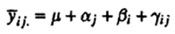
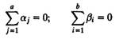
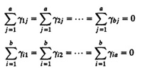
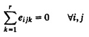
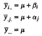
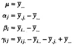

| Previous | Table of Contents | Next |
To estimate the time it takes to do a task: estimate the time you think it should take, multiply by 2, and change the unit of measure to the next highest unit. Thus, we allocate 2 days for a one-hour task.
—Westheimer’s Rule
The two-factor full factorial design discussed in Chapter 21 helps estimate the effect of each of the two factors being varied. However, the interactions between the factors were assumed negligible and, hence, ignored as errors. Replicating a full factorial design allows separating out the interactions from experimental errors. Thus, if it is known that there is a significant interaction between the factors, the design with replications discussed in this chapter should be used.
Consider a design with r replications of each of the ab experiments corresponding to the a levels of factor A and b levels of factor B. The model in this case is

Here,
The effects are computed so that their sum is zero:

The interactions are computed so that their row as well as column sums are zero:

The errors in each experiment add to zero:

The expressions for effects can be obtained in a manner similar to that used in Section 21.2 for two-factor designs without replications. The observations are assumed to be arranged in ab cells arranged as a matrix of b rows and a columns. Each cell contains r observations belonging to the replications of one experiment. Averaging the observations in each cell produces
Similarly, averaging across columns and rows and over all observations produces

From these equations, we obtain the following expressions for effects:

Computation of parameters can be easily carried out using a tabular arrangement similar to that used in Section 21.2 except that ab cell means are used in each cell to compute row and column effects.
| TABLE 22.1 Data for Code Size Study with Replications | ||||
|---|---|---|---|---|
| Workload | W | X | Y | Z |
| I | 7,006 | 12,042 | 29,061 | 9,903 |
| 6,593 | 11,794 | 27,045 | 9,206 | |
| 7,302 | 13,074 | 30,057 | 10,035 | |
| J | 3,207 | 5,123 | 8,960 | 4,153 |
| 2,883 | 5,632 | 8,064 | 4,257 | |
| 3,523 | 4,608 | 9,677 | 4,065 | |
| K | 4,707 | 9,407 | 19,740 | 7,089 |
| 4,935 | 8,933 | 19,345 | 6,982 | |
| 4,465 | 9,964 | 21,122 | 6,678 | |
| L | 5,107 | 5,613 | 22,340 | 5,356 |
| 5,508 | 5,947 | 23,102 | 5,734 | |
| 4,743 | 5,161 | 21,446 | 4,965 | |
| W | 6,807 | 12,243 | 28,560 | 9,803 |
| 6,392 | 11,995 | 26,846 | 9,306 | |
| 7,208 | 12,974 | 30,559 | 10,233 | |
| Previous | Table of Contents | Next |